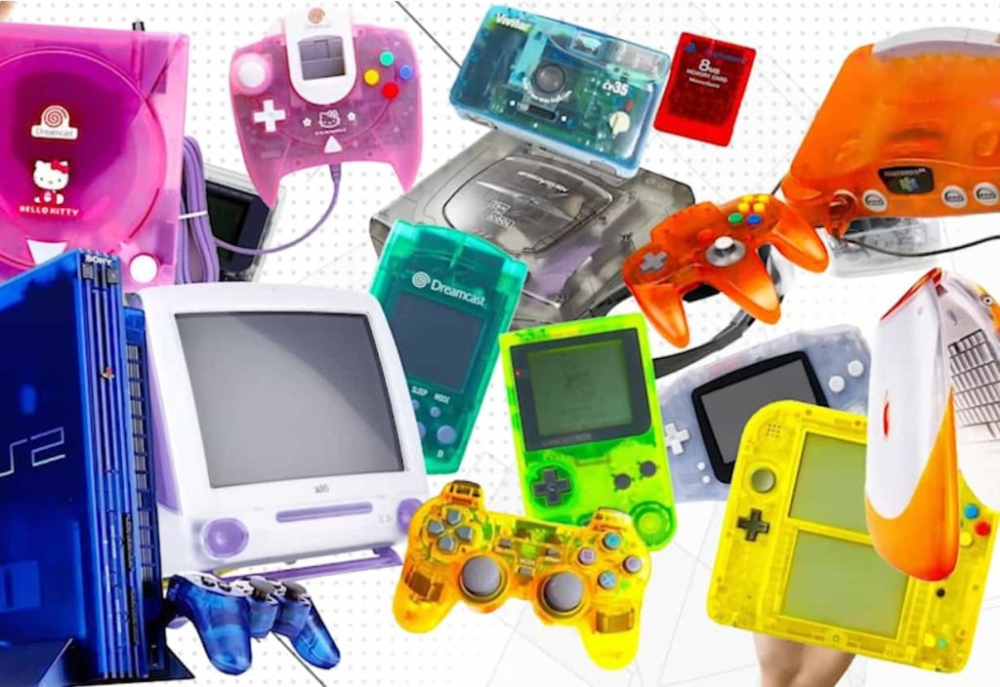
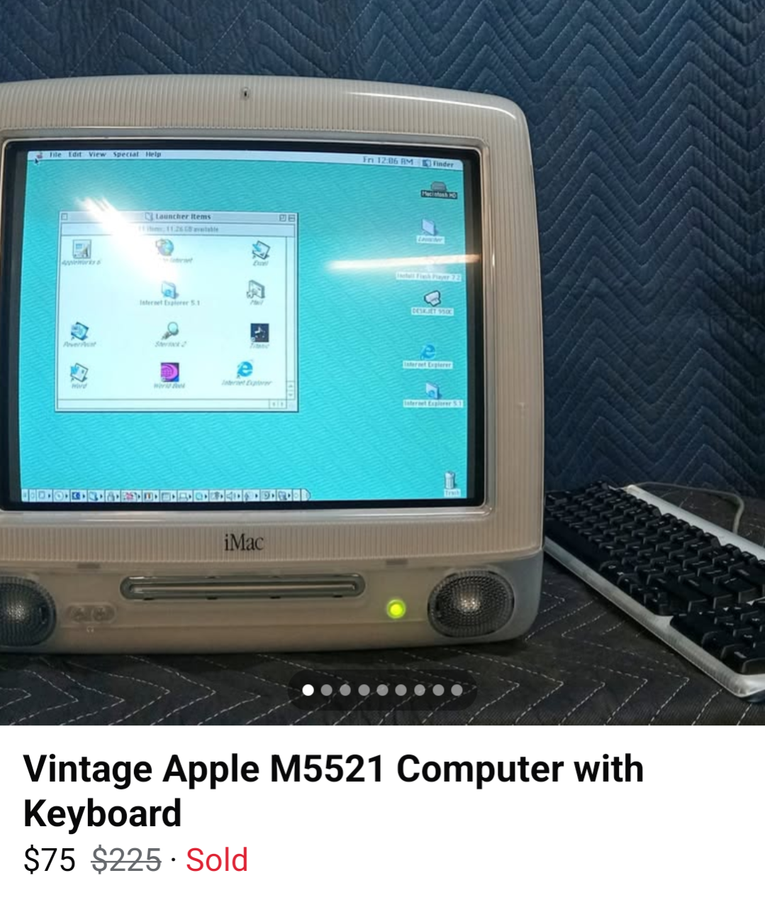
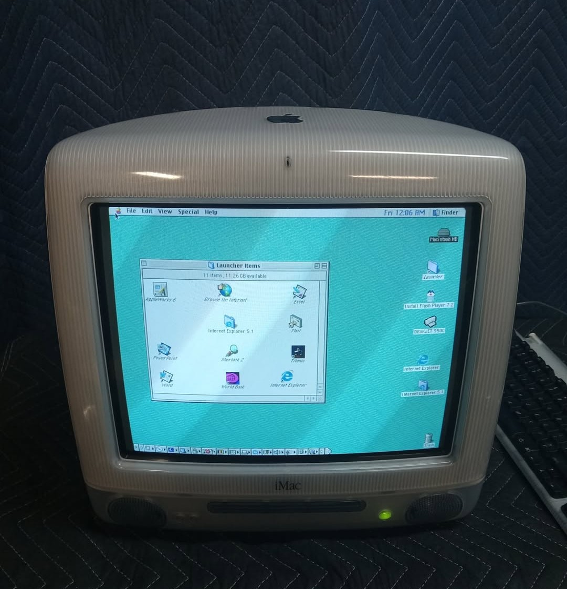
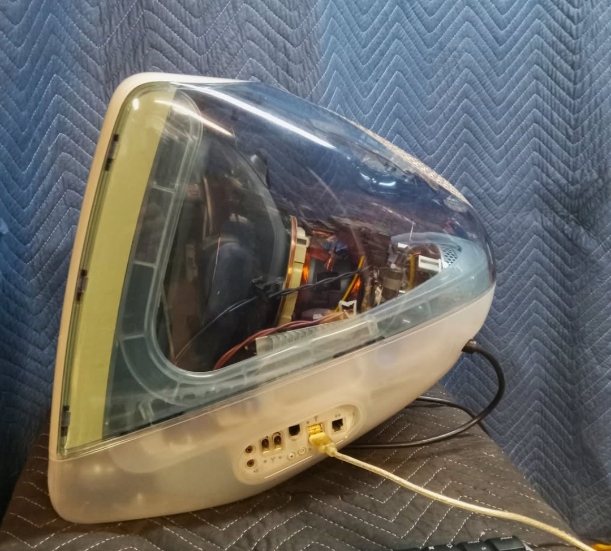
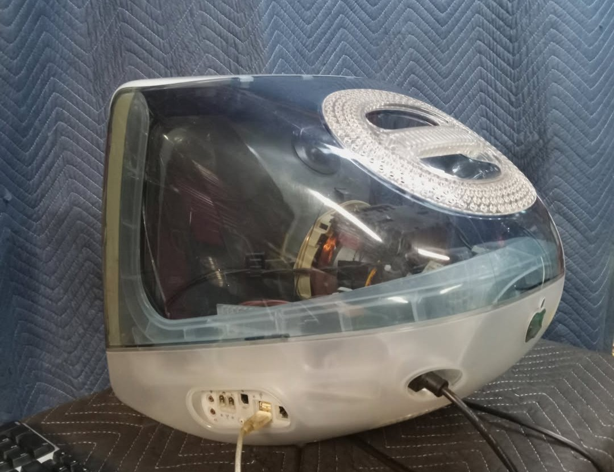
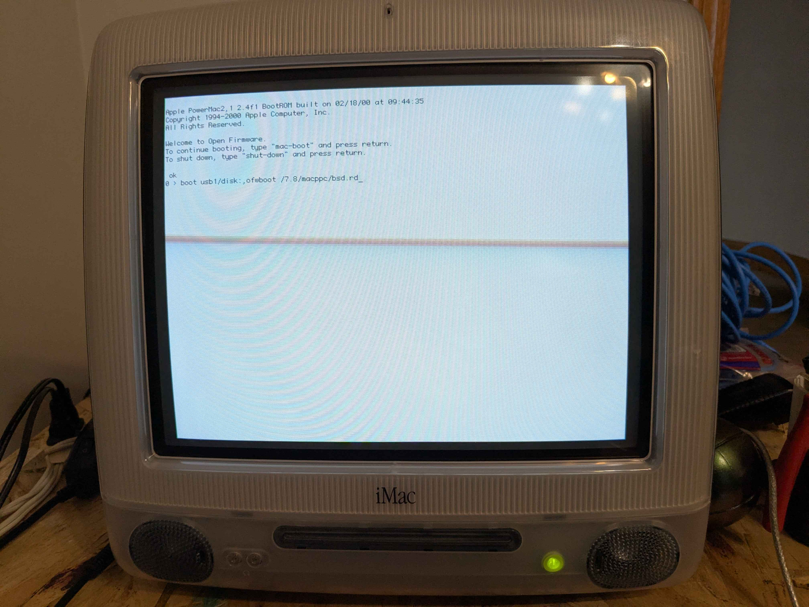
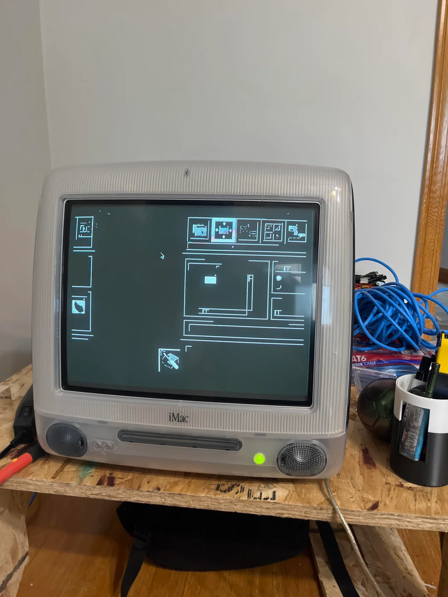

Okay, it's been a minute since I last wrote and I've definitely had a lot to talk about.
Ever since I was a young lad in the Midwest in a Mexican household, I saw colorful tech and thought it was the peak of technology, especially when it was transparent — but one had especially caught my eye. It was an Apple device… how odd, since many tech companies abandoned colorful or transparent tech before the 2000s.
Game Boy Color, N64, Dreamcast, PS2, 3DS/2DS
But some tech companies also still try. An example is Beats (Beats By Dre) having the Beats Studio Pro with a transparent option. Another company who does this trend is Framework (Biased since I own a laptop from them and really love the mission they follow). They have these transparent parts, and even joked around with “transparent aluminum”. [FrameWorks Aluminum Joke]
I'm very happy about its existence and this style didn't fade away to be forgotten-
It's kinda just magical seeing what the tech does, like you can see its inners and the reason why you're able to play Super Monkey Ball on GameCube — like seeing the PCB and the disk tray, the circuitry where they lead and go, and the full design — it's just visual eye candy.
There are exceptions in modern times. The most prominent example is prison tech, which is very very cool too but either low powered or just not obtainable. But still cool none the less for a person that will hopefully never be in jail.
If it isn't prison tech and it isn't any modern examples.. What could it be? Introducing the iMac G3.
An amazing piece of technology released by Apple and was Apple's biggest release during a time of hardship for the company. Notably it was many people's first home computer or school computer according to sales - (Wikipedia), and many reviews talking about this-.
Yet, it wasn’t mine - (sadly) but I somehow “imagined my family had one and conjured a reality that I grew up with one BEFORE actually acknowledging WHAT IT WAS - I GUESS MY BRAIN JUST assumed the timeline worked out since it wasn't the original release of the iMac G3. It was the refreshed version 1999–2001 range of it, and they kept it for maybe a couple more years and I vividly remember it being this sexy transparent blue and it having MacOS X on it.
But it's amazing what the human brain can do… Gaslighting myself into that situation.
Anyway I always had a soft spot for these, and wanted one - - PLUS ITS A CRT WHICH I DID GROW UP WITH, so I'm only a half poser I say I am.
I've been watching videos and reading reviews/threads/comments for years and someone who I respect and love so much is: Action Retro.
Action Retro since he was a big driving force into what I want to do and how fun it is. I love old computers more and more because of him.
I’m browsing Facebook Marketplace and was looking for kei trucks initially but I found this listing for an iMac G3…. Now I'm not a big fan of instantly buying something. Personally I wait a couple of weeks or months to see if I actually wanted it…
BUT THE YEARS OF KNOWLEDGE, THE VIDEOS I WATCHED, THE COOL AESTHETIC OF IT .. it kept me up every night.. pestering my brain.. I’m already filled with ideas — and the idea of owning it and the fear of never getting this opportunity again pushed me to buy it.
Day after day it kept digging inside my brain until…
On the Eighth of November 1pm 2025.. I asked if it came with anything else or has any issues — this listing doesn't have the greatest description:    Powers On, No Mouse. No Further testing done. As is
Cash Only
First come first serve
So basic questions like has it been in the house of a smoker to prevent any strong smells, or any major issues or weird noises — this was a real gamble for 70 dollars..
I said “can we meet late maybe around 9pm” since I work 2nd shift - he says “no”. So I take an early lunch at 6pm and drive a block away from my job. I get there WHILE it's raining, pay in cash, and secure the computer.
The rest of the work day is just daydreaming, nothing could have ruined that day — my “childhood computer” in my possession.
I got it home… I fell asleep and woke up to see it was still there. I wasn't dreaming. I. WAS. ECSTATIC.
Phase two.. Idk what to do now… should I convert it like a Action Retro video? and maybe challenge (torture) myself into daily driving it?.. maybe an old retro gaming machine…? or making it a part of my server…?
I want it to have a cool icon on it while it idles but ive seen people watch youtube videos IN the terminal and get live discord messages so moving towards that.
Almost being like the Macintoshlibrarian: https://www.youtube.com/macintoshlibrarian
ActionRetro’s Daily Driver Challenge with the G3
That is just the start of the rabbit hole..
Since I was still building my homelab, this was just another piece I could add to it… Now I have an internet switch, 2 Raspberry pis, a Lenovo M900 mini - and a giant crt.. - I had to learn about vpns if I wanted to download “linux isos” and somehow that went into crypto..
Now I'm not a huge advocate for crypto even if it has its plus of being separate from any economic features so chance of it being caused or controlled in one place and how accessible it kinda is and how its cool being a "universal" currency and being able to mine it using older computers and reviving them and preventing e-waste and security and protection.
BUT because it's separate it's fragile.. people can hoard, rugpulls, and it being a stupid idea.. dogecoin… really? That's NOT going to replace the US Dollar… IM NOT A ECONOMIST OR A FINANCIAL ADVISOR I DON'T KNOW THE WHOLE SCALE - - MAYBE GOOD MAYBE BAD
IDK BUY GOLD IT HOLDS REAL VALUE - - DONT ASSUME THAT THE SYSTEM IS BACKED UP AND SAFE FOR LONG TERM - THIS IS A TIME OF SCARCE RESOURCES AND NEEDING TO DIY - - TAKE BACK WHAT SHOULD BE OURS … anyway..
Mental Outlaw, the biggest either honeypot (term for baiting a trap for hackers usually from feds) or most real and trusted internet user on that platform.
[ Source: ] https://usa.kaspersky.com/resource-center/threats/what-is-a-honeypot
His entire channel is about linux and privacy and the news of it or just good practices to follow and a lot of the time he's mentioning MullvadVPN and Tor.. Monero.. All new terms to me..
I’ve talked about him a lot, if you're interested, he is a really good starting/jumping point.
https://www.youtube.com/@MentalOutlaw/videos?view=0&sort=dd&shelf_id=2
Anyway Monero, a certain type of crypto, has a good reputation for privacy and is used for transactions that are harder to trace (for now). But it still fluctuates in value like other crypto. So I bought some because I want to pay with that for my VPN.
(Again, this is JUST TO SET UP MY server).
I'm not going to lecture you why you should have one because you should. I mean, you COULD. But no. This is 2026 and this place is getting more and more 1984.
I'm using Mullvad because of its policy and mission and I like the no login or email aspect- They are committed to security. You can even mail money to them with your special characters they generate and boom you have access. So that crossed crypto and a VPN off the list - killed 2 birds with one stone deal. Now I have a secure way to do transactions if needed…
So now I'm protected and can be safe sailing the seas.
Since I'm already a Linux loser enthusiast and eager to see this get a new life, I started researching what I can use besides macOS X.. then I found it.. OpenBSD… what is it…? Idk just watch this lecture about it.
I'm joking. It has an interesting history, but a quick TLDR of it is.. This code that is both the kernel and software (actual usability) combined into one different from linux being only one part of it, but, like linux can revive ancient tech from the dead - its for mostly security, its been used from Apple to Microsoft too so all denominations of “OS” has roots from BSD and the contributions from them being open for all to use.
I guess I could've also used some very light weight linux distros like puppy linux or gentoo or tinycore but openBSD has it made especially for it and since I didn’t want to configure anything for the monitor (foreshadowing) so if its made for it might as well make my life easier..
As much as I want to keep it untouched and adore playing with MacOS 9 for the first time, I want to learn and expand its usage so welcome OpenBSD.. You're on the team.
Rewatched Action Retro video and repeated his steps - so got a usb stick and plugged it in and booted into openfirmware... and nothing.. Weird, I remember putting the ISO on the usb and made sure I chose powerpc /iMac..
After rebooting I remembered that I'm an idiot and my iMac is physically unable to boot through USB because it wasn't standard.
So I got my cds and my cd burners k3b.. And burned the iso on the cd and that worked…
I forgot to mention I bought ram for it so now it's a full 1gb — what a beast going to tear though that bare bones html page.
I also changed the CMOS battery since we will be storing stuff in memory.
This during the early stages of ram being expensive so I felt I over paid for it but glad I didnt wait since EVEN NOW FOR AN EXTRA 512MB ITS OVER +70 DOLLARS - ALL THAT FOR 1 GB- I HAVE FLASHDRIVES BIGGER THAN THAT.
But the storage for it isn't bad, yeah it's old.. And slow but it was free. I parted the partition and booted it to open software and bobs your uncle “it works”.
It feels very familiar but theres small hiccups, granted im not going to explore all of it yet since I'm still leaning about it and the resources i want dont exist.
The terminal part of OpenBSD works, but then I did startx to get into the gui … that's different.
I'm currently looking to see what I did wrong but it still works as a CLI and a part of my server being the “head" that can see anything that might go down, how much power it's using and even using tmux and other services.
But another problem I noticed is that CRT can't be on for too long, it gets hot.. and noisey which lowers the lifespan (Which I get since it’s literally a giant magnet and capacitor).
And in some parts the gui is split and not even in color.. So if anyone has any knowledge on why please please help..
 OpenBSD Reddit Thread for My IssueI posted my problem online and hopefully the experts can send their experience to me and I'm hoping to replicate good results and write them here.
1/26/26 - [ I've read the comments from the thread and doing research on them since I dont really understand what it means and WILL do them once I get a weekend to myself ]
1/26/26 - [I also recordded the actual setup and just editing it now, removing all weird pauses and fixing the frame ]